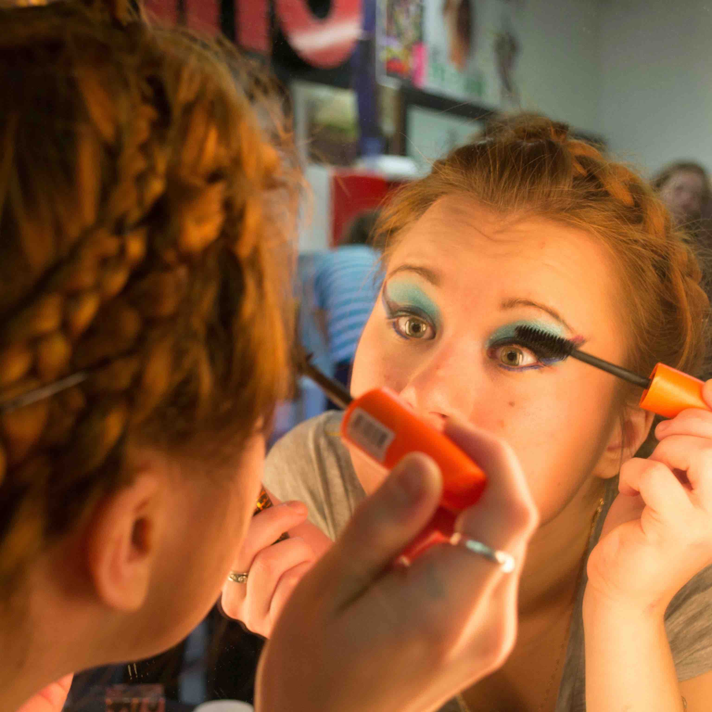
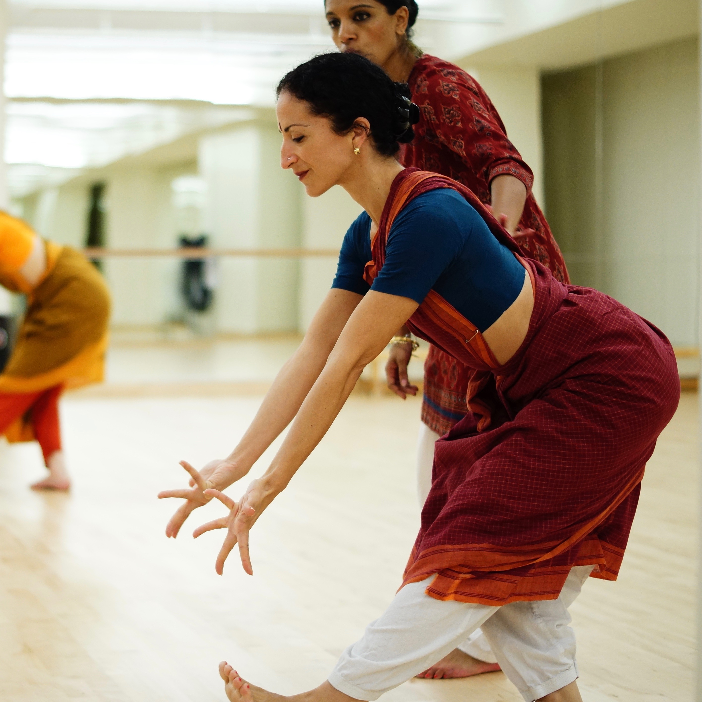
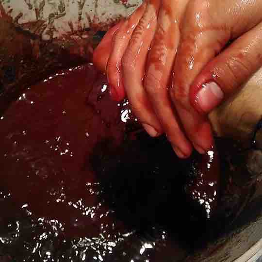
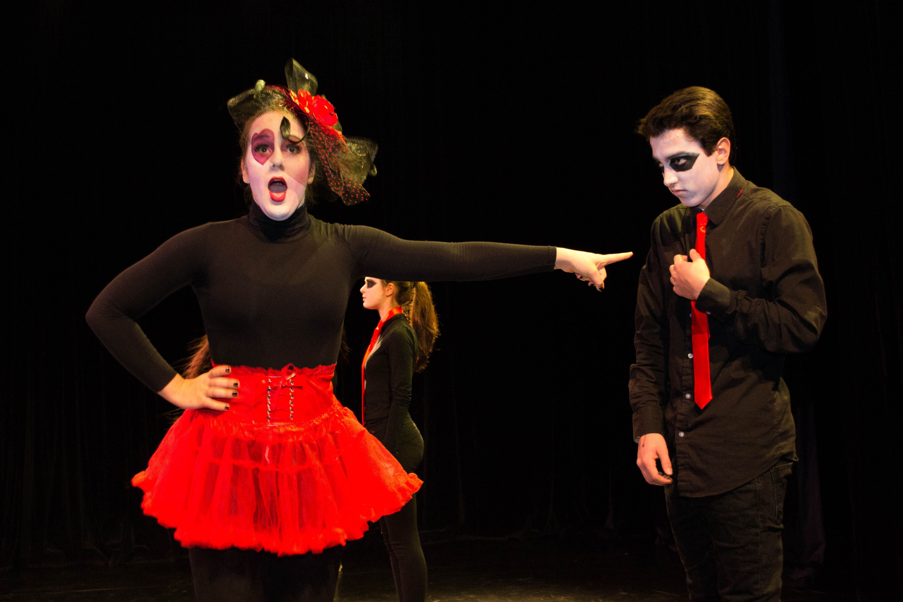
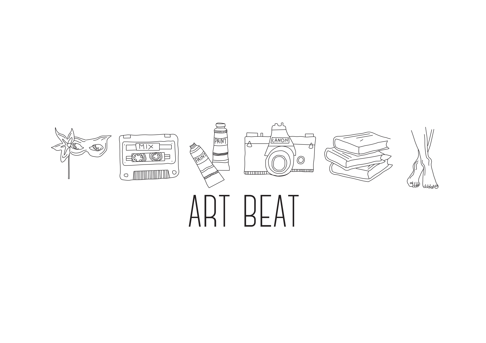
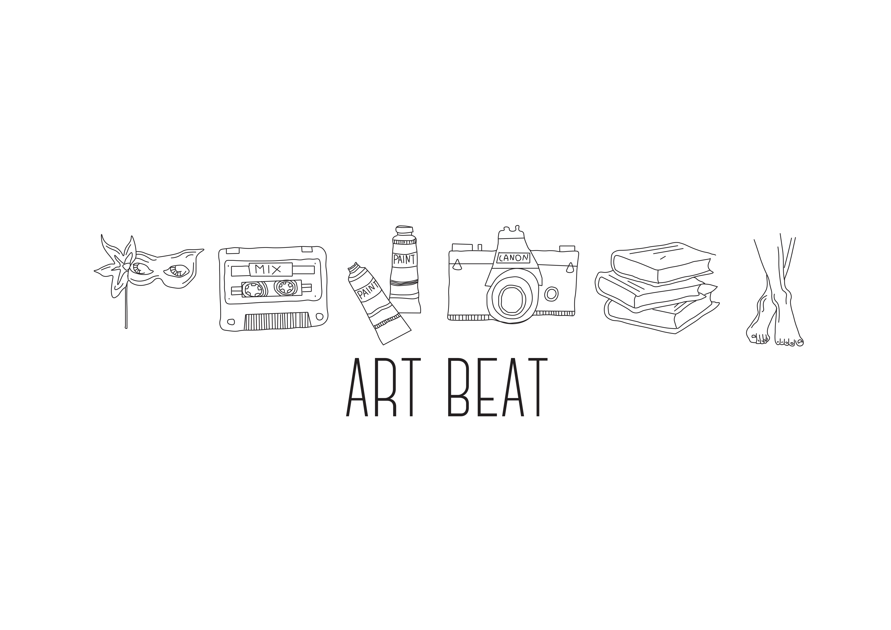

MARIKA NIKO




Directing
Alice in Wonderland
2015 Performance
Modern adaptation of the story of Alice In Wonderland, inspired by Fredrik Rydman's "Swan Lake Reloaded." Aimed to combine various types of music (classical, pop, jazz, and electronic music) along with different dance styles (ballet, contemporary, breakdance, hip hop, and gymnastics).


.jpg)
in the becoming
2016 Performance
Production Managing
The Return of La Argentina
2017 Production Assistant and Post-show Talk Moderator
Being inspired by the great Butoh master, Kazuo Ohno, Trajal Harrell aims to archive his masterpiece La Argentina. Assisted Trajal Harrell and Jean-Stephan for the special one-night show in Abu Dhabi.
Susan's work
2017 Production Collaborator and Conductor
Susan Hefuna collaborates with NYU Abu Dhabi students to create a piece about spacial awareness. Worked with the Guggenheim Abu Dhabi team to organize and conduct the collaborative process, and worked with Susan as a performer to craft this piece together.
Organizing
Attitude Dance Society
2015-16 Vice President
Attitude is the one and only dance group in NYU Abu Dhabil, that stands for all the dancers in the community. Managed weekly classes and workshops with professional instructors and visiting artists for 270 members. Organized dance recitals where I worked on the technical aspect of the show and the incorporation of local schools and dance studios.
Body Voices Conference
2016 Director of Student Engagement and Internal Outreach
Organized a three-day conference about dance incorporating dance scholars across the Middle East and beyond. Founded a platform to support creative student initiatives.

ArtBeat Festival
2015 Treasurer and Assistant Director of Logistics
Co-founded a three days Arts Festival in The Netherlands, that explore experimental and creative initiatives lead by students from United World College Maastricht.
 

Costume Making
ANAEMIA
2017 Costume Designer and Dramaturg
65 joules
2017 Scenic and Costume Designer
Taking into account the Law of Conservation of Energy, 65 joules explores the fear of loss of an eight year old boy Mustafa through transformation rather than creation and destruction.
in the becoming
2017 Costume Designer